К распространенным дефектам лакокрасочного покрытия относятся частицы, кратеры, пропуски краски, царапины и забоины, потеки, вмятины и т. д.
|
Тип лакокрасочного покрытия |
Тип дефекта |
Технология ремонта |
|---|---|---|
|
Глянец (глянцевое лакокрасочное покрытие) |
Вмятины и забоины |
①~⑩ |
|
Дефекты, такие как частицы, кратеры, пропуски краски, царапины и забоины, потеки и т. д. |
③~⑩ |
|
|
Матовое лакокрасочное покрытие |
Вмятины и забоины |
①~⑧、⑩ |
|
Дефекты, такие как частицы, кратеры, пропуски краски, царапины и забоины, потеки и т. д. |
③~⑧、⑩ |
|
Категория дефекта лакокрасочного покрытия |
Пример на изображении |
Характеристика дефекта |
|---|---|---|
|
Частицы |
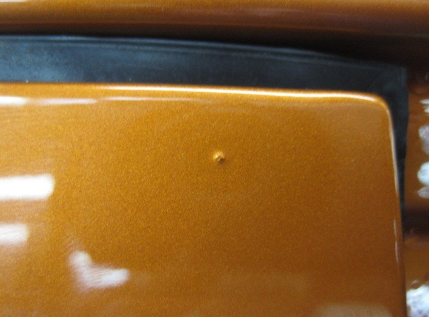 |
Появление на поверхности или локально на пленке покрытия бугорков в виде частиц |
|
Кратеры |
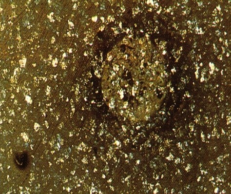 |
Углубления в форме воронок, средний размер исчисляется в миллиметрах. |
|
Отслоение краски |
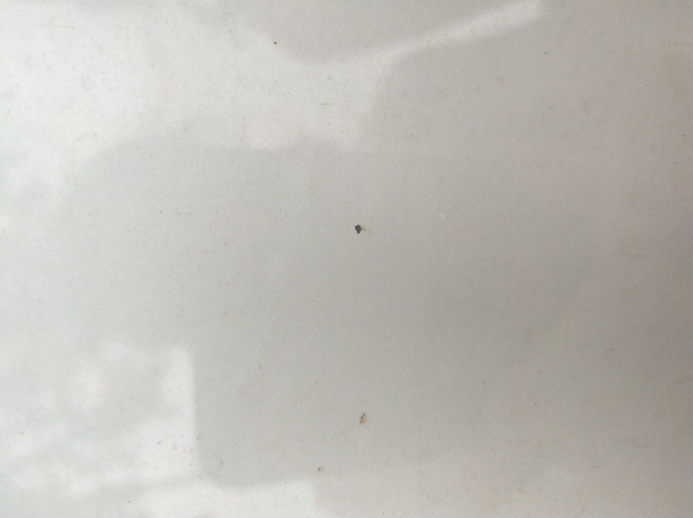 |
Отслоение слоя лака или отслоение всей лакокрасочной пленки с поверхности покрытия |
|
Царапины и забоины |
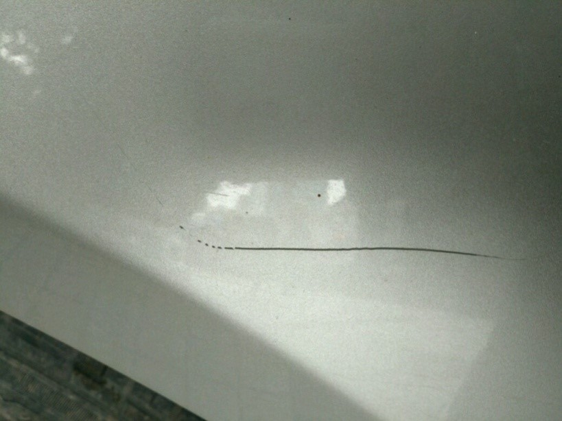 |
Появление царапин после повреждения поверхности лакокрасочной пленки твердым предметом |
|
Потеки |
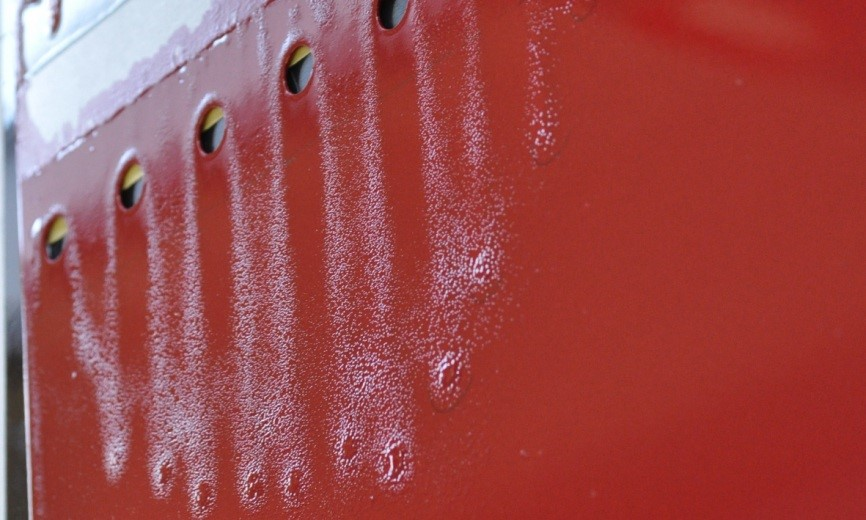 |
Дефект сползания краски на вертикальных поверхностях |
|
Вмятины и забоины |
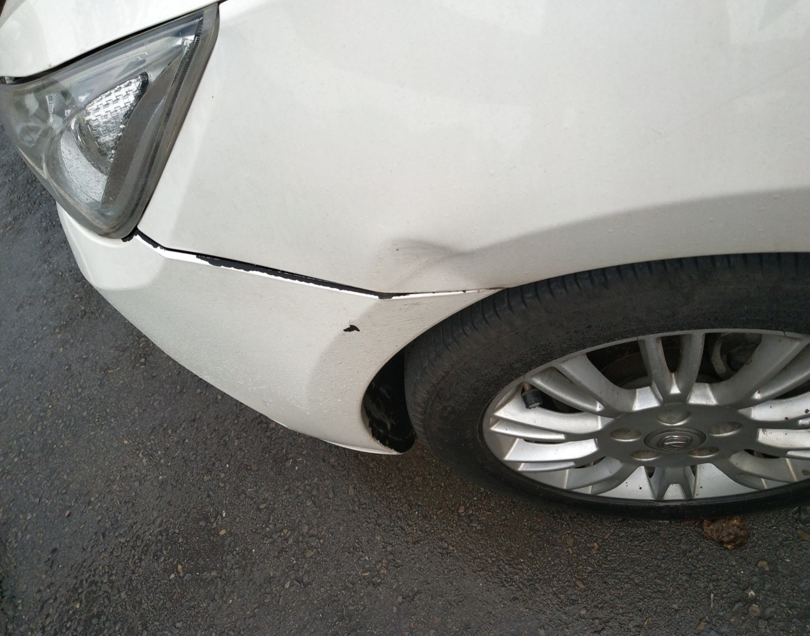 |
Дефект появления вмятины на листовом металле в результате удара внешней силой по поверхности пленки |
Выполнить правку листового металла в зоне вмятины:
Подготовка инструментов: деревянный молоток, рихтовочный стержень, металлический брусок;
Требования к операции: при правке одной рукой прижимать зону вмятины, а другой рукой удерживать рихтовочный стержень и выдавливать наружу, усилие не должно быть чрезмерным, при этом одновременно оценивать ровность зоны вмятины на ощупь и визуально.
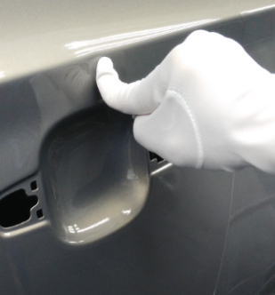
Нанести шпатлевку на отремонтированный участок листового металла:
Подготовка инструментов: палетка для шпатлевки, шпатель;
Требования к операции: при нанесении шпатлевки сначала заполнить углубление, затем использовать многонаправленный метод нанесения для расширения зоны шпатлевания, обычно в 3 раза превышающей площадь вмятины, после выравнивания нанести еще один слой шпатлевания (стандарты шпатлевания: при площади ≥ 5 cm x 5 cm шпатлевание запрещено; при площади ≤ 5 cm x 5 cm общее количество мест шпатлевания на автомобиле не должно превышать 5; при площади ≤ 5 cm x 5 cm общее количество мест шпатлевания на поверхностях класса A и B не должно превышать 3; при толщине вмятин и забоин на листовом металле ≥ 150 um шпатлевание запрещено).
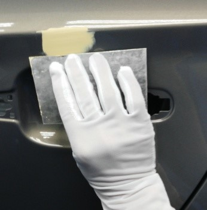
Зашлифовать дефекты лакокрасочного покрытия:
Подготовка инструментов: шлифовальный блок, шлифовальная машина;
Требования к операции: выполнить круговую шлифовку наждачной бумагой зернистостью 800#, после шлифовки проверить, не обнажился ли листовой металл. При обнажении металла нанести на эти участки антикоррозионную грунтовку (толщина пленки контролируется в пределах от 5 um до 10 um, выдержать в течение 1 min – 2 min перед ремонтным нанесением эмали, слишком толстый слой не высыхает быстро, а слишком тонкий не обеспечивает антикоррозионный эффект).
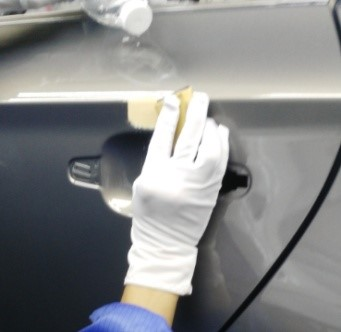
Маскировка:
Требования к операции: с помощью термостойкой клейкой ленты зафиксировать маскировочную бумагу и защитить лакокрасочную пленку вне зоны ремонта во избежание загрязнения других частей. С помощью алюминиевой фольги защитить термочувствительные компоненты рядом с зоной ремонта, такие как фары, ручки дверей, стекла.
Нанести цветную эмаль на отремонтированный участок:
Подготовка инструментов: ремонтный аэрозольный пистолет;
Расход воздуха краскопульта: 30–70 ml/min;
Расстояние от сопла до окрашиваемой поверхности: 250 ± 50 mm;
Ширина факела распыления: 200–350 mm;
Коэффициент перекрытия факела: для одноцветной краски 1/2–3/4; для металлика 2/3–3/4;
Скорость перемещения: для одноцветной краски 0.8–1.5 m/s; для металлика 1.2–1.5 m/s; перемещение влево-вправо должно быть равномерным, сопло должно оставаться перпендикулярным окрашиваемой поверхности во избежание появления таких дефектов, как разнотон, пятна и т. д.
Нанести лак на отремонтированный участок:
Подготовка инструментов: ремонтный аэрозольный пистолет;
Расход воздуха краскопульта: 30–70 ml/min;
Расстояние от сопла до окрашиваемой поверхности: 250 ± 50 mm;
Ширина факела распыления: 200–350 mm;
Коэффициент перекрытия факела: 1/2–3/4;
Скорость перемещения: 0.8–1.5 m/s; перемещение влево-вправо должно быть равномерным, сопло должно оставаться перпендикулярным окрашиваемой поверхности. Площадь покрытия лаком должна превышать зону цветной эмали более чем на 5 cm во избежание появления обнаженной цветной эмали.
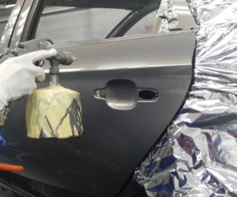
Нанести состав для удаления следов на отремонтированный участок:
Подготовка инструментов: ремонтный аэрозольный пистолет;
Требования к операции: аналогично нанесению лака, распылить туман на границу ремонта лака до полного исчезновения следов стыка.
Выполнить сушку отремонтированного участка:
Подготовка инструментов: фен, сушильная лампа;
Требования к операции: с помощью фена предварительно высушить угловые участки после ремонта;
Расстояние от фена до ремонтируемой зоны: 10–20 cm;
Скорость перемещения: 0.8–1.5 m/s;
Расстояние сушки лампой: 300 mm;
Температура сушки лампой: 80–100 ℃;
Время сушки: 20–30 min;
После сушки твердость отремонтированного лакокрасочного покрытия достигает твердости HB (по карандашу Mitsubishi).
Выполнить шлифовку, полировку и очистку отремонтированного участка:
Подготовка инструментов: шлифовальный блок, полировальная машина, полировально-шлифовальная машина;
Требования к операции: легкие частицы, кратеры слоя лака, мелкую потницу, слепые пятна от опыла зашлифовать наждачной бумагой зернистостью 1500#, приложив ее плашмя к поверхности пленки и выполняя движения по три круга влево и вправо, соблюдая осторожность в процессе шлифовки во избежание протирки лакокрасочной пленки насквозь; при полировке сначала нанести небольшое количество полировальной пасты на место шлифовки, отполировать полировальной машиной, а затем насухо протереть салфеткой 3M.
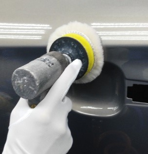
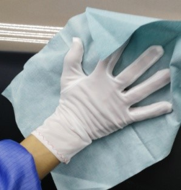
Проверить лакокрасочное покрытие;
Требования к качеству после покраски: лакокрасочная пленка ровная, гладкая, цельная, полная и равномерная; при визуальном осмотре с расстояния 0.5 m от кузова при хорошем освещении на ней отсутствуют видимые отличия по цвету и блеску по сравнению с другими частями кузова, а также такие дефекты, как пропуски краски, частицы, волокна, кратеры, точечные отверстия, «апельсиновая корка», потеки, следы наждачной бумаги и т. д.